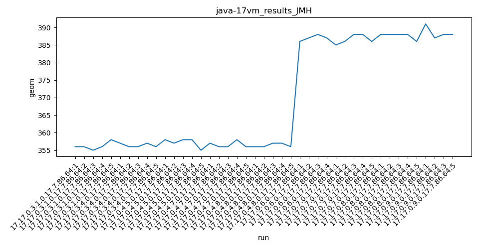
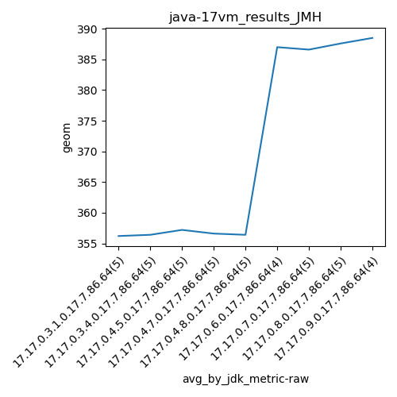
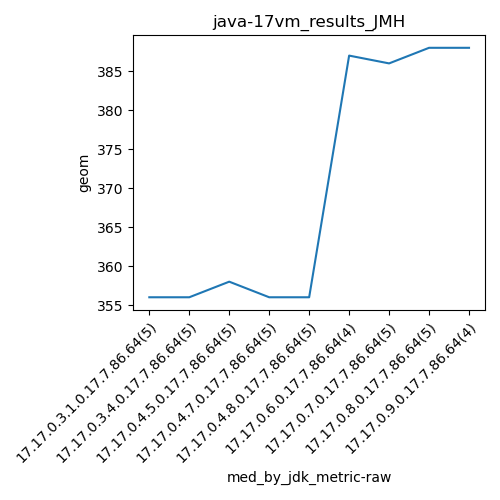
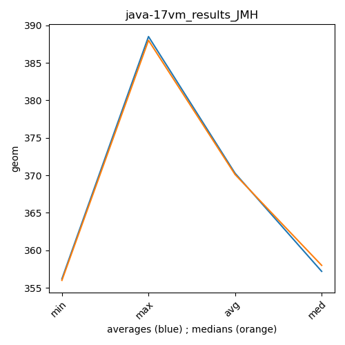

java-17 JMH
Context at bottom
/home/jvanek/git/benchmarks-in-nested-virtualisation-toolchain/final_results/vm_results/vm_results_RADARGUNs1
java-17
JMH
/home/jvanek/git/benchmarks-in-nested-virtualisation-toolchain/final_results/vm_results/vm_results_RADARGUNs3
java-17
JMH
/home/jvanek/git/benchmarks-in-nested-virtualisation-toolchain/final_results/vm_results/vm_results_DACAPO
java-17
JMH
/home/jvanek/git/benchmarks-in-nested-virtualisation-toolchain/final_results/vm_results/vm_results_J2DBENCH
java-17
JMH
/home/jvanek/git/benchmarks-in-nested-virtualisation-toolchain/final_results/vm_results/vm_results_SPECJBB
java-17
JMH
/home/jvanek/git/benchmarks-in-nested-virtualisation-toolchain/final_results/vm_results/vm_results_JMH
java-17
JMH
vm_results_JMH
final score
Expected number of java-17 JDKs: 9
1st avgmed_alljdks_metric:
/home/jvanek/git/benchmarks-in-nested-virtualisation-toolchain/final_results/result_processing.py /home/jvanek/git/benchmarks-in-nested-virtualisation-toolchain/final_results/vm_results/vm_results_JMH geom False
values: [356, 356, 355, 356, 358, 357, 356, 356, 357, 356, 358, 357, 358, 358, 355, 357, 356, 356, 358, 356, 356, 356, 357, 357, 356, 386, 387, 388, 387, 385, 386, 388, 388, 386, 388, 388, 388, 388, 386, 391, 387, 388, 388]

Expected number of iterations: 5
final number of values: 43 out of 45
Pass rate: 95.6%
values: (355, 391, 369.4651162790698, 358)

** accuracy from all jdks and runs
more is better
MIN: 355
MAX: 391
AVG: 369.4651162790698
MED: 358
Relative differences 1:
MIN-MAX: 9.0 %
MIN-AVG: 4.0 %
MIN-MED: 1.0 %
MAX-MIN: -10.0 %
MAX-AVG: -6.0 %
MAX-MED: -9.0 %
AVG-MED: -3.0 %
stored to java-17.properties. sort | uniq that!
2nd avgmed_by_jdk_metric:
values: [356.2, 356.4, 357.2, 356.6, 356.4, 387.0, 386.6, 387.6, 388.5]

values: [356, 356, 358, 356, 356, 387, 386, 388, 388]

values: (356.2, 388.5, 370.27777777777777, 357.2)
values: (356, 388, 370.1111111111111, 358)

** accuracy from all jdks where runs were avged
more is better
MIN: 356.2
MAX: 388.5
AVG: 370.27777777777777
MED: 357.2
Relative differences 1:
MIN-MAX: 8.0 %
MIN-AVG: 4.0 %
MIN-MED: 0.0 %
MAX-MIN: -9.0 %
MAX-AVG: -5.0 %
MAX-MED: -9.0 %
AVG-MED: -4.0 %
stored to java-17.properties. sort | uniq that!
** accuracy from all jdks where runs were medianed
more is better
MIN: 356
MAX: 388
AVG: 370.1111111111111
MED: 358
Relative differences 1:
MIN-MAX: 8.0 %
MIN-AVG: 4.0 %
MIN-MED: 1.0 %
MAX-MIN: -9.0 %
MAX-AVG: -5.0 %
MAX-MED: -8.0 %
AVG-MED: -3.0 %
stored to java-17.properties. sort | uniq that!
pass rates:
vm_results_JMH=95.6%
Context:
- vm_results
- JMH